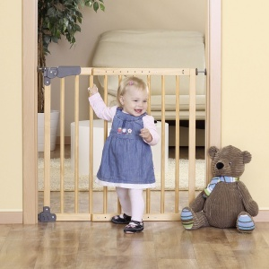

проглатывание наполнителя кошачьего лотка, попадание наполнителя в дыхательные пути
ЧТО ДЕЛАТЬ, ЕСЛИ ИНОРОДНОЕ ТЕЛО ПОПАЛО В НОС
уберите кошачий лоток из зоны досягаемости ребенка

закройте свободную половину носа и предложите ребенку выдуть инородное тело;
при отсутствии таковой возможности, не пытайтесь вынуть инородное тело самостоятельно, его можно протолкнуть еще глубже;
обратитесь за помощью к врачу
ЧТО ДЕЛАТЬ, ЕСЛИ ИНОРОДНОЕ ТЕЛО ПОПАЛО В УХО
не пытайтесь вынуть инородное тело самостоятельно без специальных инструментов, его можно протолкнуть еще глубже;
обратитесь за помощью к врачу
ЧТО ДЕЛАТЬ, ЕСЛИ НАСЕКОМОЕ ПОПАЛО В УХО
осмотрите ухо, оттянув его назад и вниз;
закапайте в ухо теплый раствор глицерина, вазелинового или другого масла, температурой 37-39 0С;
не вынимайте насекомое самостоятельно - обратитесь к врачу
ЧТО ДЕЛАТЬ, ЕСЛИ ИНОРОДНОЕ ТЕЛО ПОПАЛО В ПИЩЕВОД
наблюдайте за ребенком в случае, если он проглотил предмет обтекаемой формы (пуговицы, округлые камушки, шарики, монетки) и небольшого размера;
период ожидания от одних до 3-4 суток с постоянным тщательным изучением стула ребенка;
если за это время предмет не обнаружен, следует проконсультироваться с врачом
ЧТО ДЕЛАТЬ, ЕСЛИ ИНОРОДНОЕ ТЕЛО ПОПАЛО В ДЫХАТЕЛЬНЫЕ ПУТИ
Для детей младше восьми месяцев:
положите малыша себе на руку лицом вниз так, чтобы его грудь лежала на вашей ладони;
обхватите большим и указательным пальцем челюсть крохи;
сядьте и расположите руку, на которой лежит ребенок, так, чтобы ваше колено или бедро были для нее надежной опорой;
опустите голову ребенка так, чтобы она располагалась ниже туловища;
в течение 5 секунд ладонью другой руки нанесите 4 резких удара по спине малыша между лопатками;
затем переложите ребенка на другую руку личиком вверх;
держащую руку опять же обоприте о бедро или колено;
голову ребенка держите ниже уровня тела;
положите два пальца другой руки на грудину малыша чуть ниже сосков;
в течение 5 секунд 4 раза резко надавите на грудину так, чтобы она опустилась на 1,5—2,5 см;
затем снова переложите малыша на другую руку лицом вниз и нанесите ему 4 удара между лопатками;
продолжайте чередовать оба описанных выше приема (4 удара по спине между лопатками и 4 надавливания двумя пальцами на грудину).
Для детей старше восьми месяцев:
встаньте позади ребенка, обхватите его крепко за талию;
соедините на груди руки в плотный замок и надавите на место расположения желудка по направлению вверх, попутно создавая давление на живот и диафрагму
ВАЖНО ЗНАТЬ
при частом срыгивании или срыгивании фонтаном, обязательно проконсультируйтесь у педиатра!
для раннего обнаружения признаков захлебывания используйте радио- или видеоняню;
появление кашля – благоприятный признак. Его наличие автоматически предполагает ненужность принятия каких-то специальных мер по освобождению органов дыхания от жидкости. В данном случае необходимо просто дать ребенку откашляться.